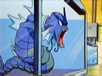

|
|
|
206. The Joy of Water Pokémon

Ash, Misty and Brock come across a lake. Misty gets excited saying
how it is Lake Lucid. A person in an underwater suit emerges from in
the lake holding a Goldeen. Two Chansey come and take it away in a
water streatcher. Brock knows that it is a girl, the suit opens to
reveal Nurse Joy. Misty gets real excited now. It seems it was one
of her dreams to meet this Joy. Brock askes her if she will
autograph his book. She explaines that it was her Grandmother who
wrote that book and goes on to tell how the lake used to be a
wasteland because of all the comapnies dumping pollution into the
water. It was even too dirty for Grimer and Muk. So Brock goes back
and gets another book. She says it was writen by her mother, who
cleaned up the whole lake. Now it is as shiny as bottled water Ash
notices.
Close by Team Rocket is watching them talking to each other in their
Tentacruel sub. The gang watches as some Pokemon have practice
fights to get stronger and heal faster. Soon a Tentacruel chalenges
Team Rocket to a practice battle, they loose horriably.
The Gang goes into the nearby Pokemon center where there are a lot
of water tanks containing water Pokemon. Misty asks is Joy would
examine her Pokemon. She agrees. Misty holds out her Pokéballs and
says "Here are my water Pokémon!" Joy gets scared. She says that she
hates water Pokémon and wont even touch them. This comes as a shock
to Ash Misty and Brock because Lake Lucid is famous for water
Pokemon. She goes on to say how when she was young she was out on
the lake with her mom when some Remoraid attacked her and made her
fall into the water. They all squirt her with water gun to get her
back on the boat. They were just playing but she didnt know that.
She never liked them since. Misty is very dissapointed. Team Rocket
finds a way into the Pokémon center with their Tentacruel sub and
soon pop out of the water to steal Pikachu. They grab him. Pikachu
uses a thunderbold attack on it but Team Rocker says how it is made
out of rubber. Jesse feals a little tingly fealing then remembers
they just came out of the water. Soon it shocks then and the sub
partially explodes. A peice flys off cracking the tand Gyarados is
being held in then hits the button that lets the water out of the
Pokemon center taking Team Rocket and Nurse Joy's suit with it out
of the center. But Gyarados is injuured and scared. Ash says he will
go and calm it down but Joy poins out how he wouldnt know how and
how she would have to do it. Slowly she goes and remembering that
she is a Pokemon Nurse makes herself go and not be too afraid. SHe
touches it and calms it down. She faints afterword.
Ash Misty and Brock have to leave. Joy appologizes that she couldnt
touch Misty's Pokemon. She sais its okay and they all tell her how
proud they are for her helping out the Gyarados even though she was
scared. She says how she will always be scared of water Pokemon but
she wont let it get in the way of her job. They all leave
encouraging Joy.
Whos that Pokémon? Bellsprout
|
|
|
|